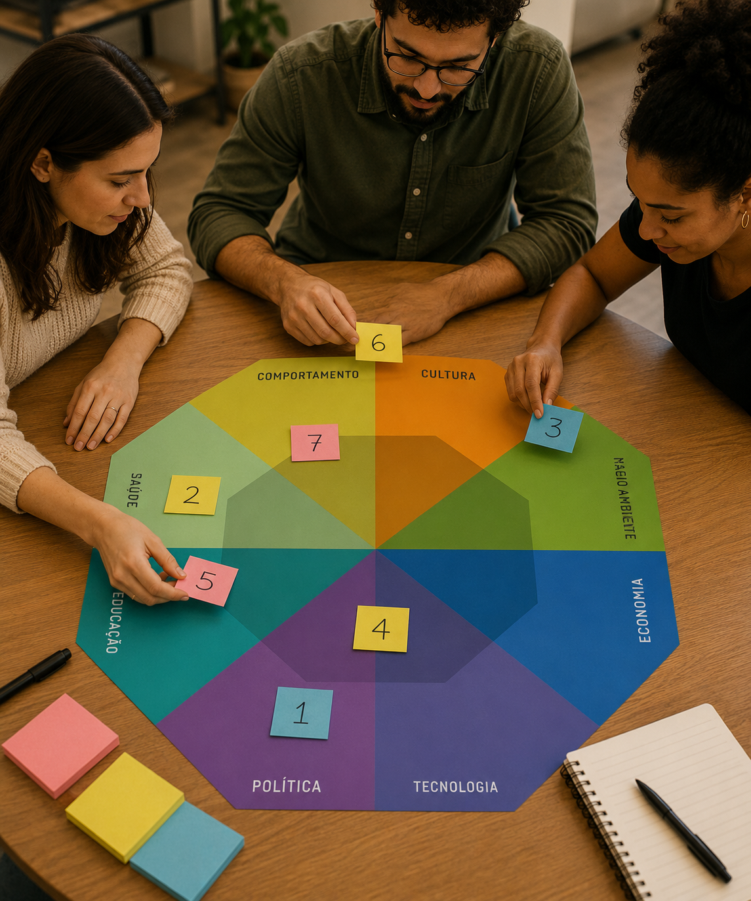

A Roda de Implicações Sociotécnicas é uma ferramenta colaborativa utilizada para explorar e especular possíveis implicações futuras decorrentes de tendências identificadas em um ecossistema sociotécnico previamente mapeado.
A ferramenta auxilia equipes a refletirem sobre como cenários sociotécnicos complexos podem gerar impactos positivos, negativos, diretos ou indiretos, imediatos ou de longo prazo em diferentes dimensões da vida cotidiana, como: saúde, educação, comportamento, cultura, tecnologia, economia, política e meio ambiente.
Seu objetivo é responder à pergunta "Para onde estamos indo?", ajudando equipes a especular consequências, antecipar riscos, visualizar oportunidades e compreender como determinadas tendências podem gerar implicações de curto, médio e longo prazo.
A ferramenta é um artefato físico e circular utilizado para explorar possíveis impactos futuros de tendências identificadas em um ecossistema sociotécnico previamente mapeado.
A partir desse cenário, os participantes discutem quais implicações podem surgir caso essas tendências se consolidem ao longo do tempo. As equipes exploram efeitos diretos, indiretos e possíveis desdobramentos futuros em diferentes áreas da vida cotidiana.
Deve ser utilizada preferencialmente de forma colaborativa por times de desenvolvimento, inovação, produto, pesquisa e ensino, permitindo que diferentes perspectivas contribuam para a análise crítica das implicações futuras.
Especule impactos e desdobramentos futuros. Reflita sobre as implicações produzidas por tendências emergentes.
Baixe a Ferramenta1 Imprima a Roda de Implicações Sociotécnicas, preferencialmente em uma lona de aproximadamente 70cm × 70cm para facilitar a colaboração e a visualização coletiva.
2 Utilize um cenário sociotécnico previamente mapeado, contendo tendências, sinais emergentes ou transformações identificadas no ecossistema analisado.
3 Levante as possíveis implicações decorrentes dessas tendências, classificando-as como positivas ou negativas e indicando sua magnitude como alta ou baixa.
4 Numere cada implicação identificada.
5 Utilize post-its para indicar, por meio da numeração, quais áreas da roda são impactadas por cada implicação. Uma mesma implicação pode afetar múltiplas áreas simultaneamente.

6 Caso alguma área impactada não esteja representada na roda, ela pode ser adicionada externamente, mantendo a flexibilidade da ferramenta para diferentes contextos sociotécnicos.
Copyright © EntangledFuture Toolkit. Todos os direitos reservados.
Criado por Marcelo Soares Loutfi. Distribuído por SaLT